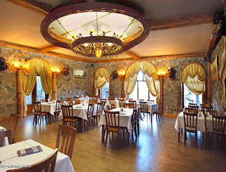

						<?xml version="1.0" encoding="UTF-8"?><rss version="2.0"
	xmlns:content="http://purl.org/rss/1.0/modules/content/"
	xmlns:wfw="http://wellformedweb.org/CommentAPI/"
	xmlns:dc="http://purl.org/dc/elements/1.1/"
	xmlns:atom="http://www.w3.org/2005/Atom"
	xmlns:sy="http://purl.org/rss/1.0/modules/syndication/"
	xmlns:slash="http://purl.org/rss/1.0/modules/slash/"
	>

<channel>
	<title>Ресторан Лесной</title>
	<atom:link href="http://new.tadatuta.ru/feed/" rel="self" type="application/rss+xml" />
	<link>http://new.tadatuta.ru</link>
	<description>Ресторан Лесной в районе Алушты.</description>
	<lastBuildDate>Fri, 21 Aug 2015 18:08:00 +0000</lastBuildDate>
	<language>ru-RU</language>
	<sy:updatePeriod>hourly</sy:updatePeriod>
	<sy:updateFrequency>1</sy:updateFrequency>
	<generator>https://wordpress.org/?v=4.8</generator>
	<item>
		<title>Лесной</title>
		<link>http://new.tadatuta.ru/photoslide6/</link>
		<comments>http://new.tadatuta.ru/photoslide6/#respond</comments>
		<pubDate>Fri, 06 Apr 2012 19:29:17 +0000</pubDate>
		<dc:creator><![CDATA[Irina]]></dc:creator>
				<category><![CDATA[Photoslide]]></category>

		<guid isPermaLink="false">http://new.tadatuta.ru/?p=175</guid>
		<description><![CDATA[]]></description>
				<content:encoded><![CDATA[<div class="newyear"></div>
]]></content:encoded>
			<wfw:commentRss>http://new.tadatuta.ru/photoslide6/feed/</wfw:commentRss>
		<slash:comments>0</slash:comments>
		</item>
		<item>
		<title>Лесной</title>
		<link>http://new.tadatuta.ru/photoslide5/</link>
		<comments>http://new.tadatuta.ru/photoslide5/#respond</comments>
		<pubDate>Fri, 06 Apr 2012 19:28:52 +0000</pubDate>
		<dc:creator><![CDATA[Irina]]></dc:creator>
				<category><![CDATA[Photoslide]]></category>

		<guid isPermaLink="false">http://new.tadatuta.ru/?p=173</guid>
		<description><![CDATA[]]></description>
				<content:encoded><![CDATA[<div class="newyear"></div>
]]></content:encoded>
			<wfw:commentRss>http://new.tadatuta.ru/photoslide5/feed/</wfw:commentRss>
		<slash:comments>0</slash:comments>
		</item>
		<item>
		<title>Лесной</title>
		<link>http://new.tadatuta.ru/photoslide4/</link>
		<comments>http://new.tadatuta.ru/photoslide4/#respond</comments>
		<pubDate>Fri, 06 Apr 2012 19:28:29 +0000</pubDate>
		<dc:creator><![CDATA[Irina]]></dc:creator>
				<category><![CDATA[Photoslide]]></category>

		<guid isPermaLink="false">http://new.tadatuta.ru/?p=171</guid>
		<description><![CDATA[]]></description>
				<content:encoded><![CDATA[<div class="newyear"></div>
]]></content:encoded>
			<wfw:commentRss>http://new.tadatuta.ru/photoslide4/feed/</wfw:commentRss>
		<slash:comments>0</slash:comments>
		</item>
		<item>
		<title>Лесной</title>
		<link>http://new.tadatuta.ru/photoslide3/</link>
		<comments>http://new.tadatuta.ru/photoslide3/#respond</comments>
		<pubDate>Fri, 06 Apr 2012 19:27:50 +0000</pubDate>
		<dc:creator><![CDATA[Irina]]></dc:creator>
				<category><![CDATA[Photoslide]]></category>

		<guid isPermaLink="false">http://new.tadatuta.ru/?p=169</guid>
		<description><![CDATA[]]></description>
				<content:encoded><![CDATA[<div class="newyear"></div>
]]></content:encoded>
			<wfw:commentRss>http://new.tadatuta.ru/photoslide3/feed/</wfw:commentRss>
		<slash:comments>0</slash:comments>
		</item>
		<item>
		<title>Лесной</title>
		<link>http://new.tadatuta.ru/photoslide2/</link>
		<comments>http://new.tadatuta.ru/photoslide2/#respond</comments>
		<pubDate>Fri, 06 Apr 2012 19:27:26 +0000</pubDate>
		<dc:creator><![CDATA[Irina]]></dc:creator>
				<category><![CDATA[Photoslide]]></category>

		<guid isPermaLink="false">http://new.tadatuta.ru/?p=167</guid>
		<description><![CDATA[]]></description>
				<content:encoded><![CDATA[]]></content:encoded>
			<wfw:commentRss>http://new.tadatuta.ru/photoslide2/feed/</wfw:commentRss>
		<slash:comments>0</slash:comments>
		</item>
		<item>
		<title>Добро пожаловать в ресторан &#171;Лесной&#187;</title>
		<link>http://new.tadatuta.ru/d/</link>
		<comments>http://new.tadatuta.ru/d/#respond</comments>
		<pubDate>Fri, 06 Apr 2012 19:25:23 +0000</pubDate>
		<dc:creator><![CDATA[Irina]]></dc:creator>
				<category><![CDATA[Photoslide]]></category>

		<guid isPermaLink="false">http://new.tadatuta.ru/?p=162</guid>
		<description><![CDATA[Добро пожаловать в ресторан &#171;Лесной&#187;]]></description>
				<content:encoded><![CDATA[<p>Добро пожаловать в ресторан &#171;Лесной&#187;</p>
]]></content:encoded>
			<wfw:commentRss>http://new.tadatuta.ru/d/feed/</wfw:commentRss>
		<slash:comments>0</slash:comments>
		</item>
		<item>
		<title>Сауна</title>
		<link>http://new.tadatuta.ru/pizza/</link>
		<comments>http://new.tadatuta.ru/pizza/#respond</comments>
		<pubDate>Mon, 09 Jan 2012 19:18:16 +0000</pubDate>
		<dc:creator><![CDATA[Irina]]></dc:creator>
				<category><![CDATA[Сауна]]></category>

		<guid isPermaLink="false">http://new.tadatuta.ru/pizza/</guid>
		<description><![CDATA[Also known as Mexican pizza or cheese crisp, the tostada grande is a staple of the Sonoran cooking so prevalent in Tucson. This recipe, from the venerable El Charro, is very basic and easy to eat without spillage; but it is common to add cebolitas (grilled green onions) on top. You might also consider salsa, [&#8230;]]]></description>
				<content:encoded><![CDATA[<p>Also known as Mexican pizza or cheese crisp, the tostada grande is a staple of the Sonoran cooking so prevalent in Tucson. This recipe, from the venerable El Charro, is very basic and easy to eat without spillage; but it is common to add cebolitas (grilled green onions) on top. You might also consider salsa, grilled vegetables or shredded beef &#8212; all of which make it pretty messy.</p>
]]></content:encoded>
			<wfw:commentRss>http://new.tadatuta.ru/pizza/feed/</wfw:commentRss>
		<slash:comments>0</slash:comments>
		</item>
	</channel>
</rss>
